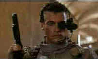
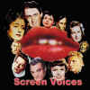

|
Universal Soldier/C+,B+ |
|
Live/1992/102m/WS 1.85 |
Don't
expect intricate story-telling in this action flick created to
put together two screen fighting icons, Jean-Claude Van Damme
and Dolph Lungren. They get to take some ferocious kicks at each
other in a relentless chase that serves as satisfactory platform
to effectively stage the fights. Former Army veterans, both
fighters have been preserved on ice as part of a government
program that transforms mere men of flesh into invincible
"fighting" machines. There's a simplistic prelude set
in a jungle a long time ago and far away that effectively
defines motivation and character for both stars and then it's
off and running, with only a brief stop for some diner food.
Most of the scenes are shot in
dim light with a bluish cast. There are explosions galore and
mucho fire power. Van Damme hooks up with a gal reporter who
stumbles into the hush-hush project and together they flee the
long arm of corrupt government. Their relationship plays mostly
for laughs, thankfully. Van Damme maintains a mantle of
innocence about his character while Dolph Lungren is straight
ahead killing machine
| .  |
|
Van Damme in action©Live |
The DVD transfer handles much of the difficult lighting with a sure touch. Shadow detail is excellent and contrast range is tightly controlled for the best picture. Offering widescreen 1.85 only, the image is perhaps a mite too sharp resulting in edge enhancement artifacts. The 5:1 soundtrack powerfully accompanies the action set pieces.
The Feature
Archive has articles ranging from John
Ford to Blonde
Bimbos, The
Heistmasters, Akira
Kurosawa and Frank
Darabont. 
Click on the image above to learn more about the effect of
an actor's voice on his screen persona.
Check out the Movie
Poster Archive for short bios and images of
Susan Hayward, Kirk Douglas, Katharine Hepburn and many more.
This month's featured star is Cary
Grant
Imaging
Science Foundation
The Imaging Science Foundation promotes
proper standards in home theater viewing. ISF trained
technicians offer monitor calibration services to consumers. The
difference in a properly calibrated monitor can be
astounding. Click on the image to find an ISF member near you.
HOT
LINKS
DVD
Verdict
They
may be judgmental, but that's the point, isn't it. Lots of DVD
reviews plus news and more
The
Home Theater Forum
Looking for
lively and helpful exchanges on home theater, DVD, movies. Visit
this friendly site and get a hardy welcome.
Home
Theater Reference Reviewing System
When you read a DVD review it's of utmost importance to know
what equipment is being used to evaluate quality. Click on the
projector to find out more.